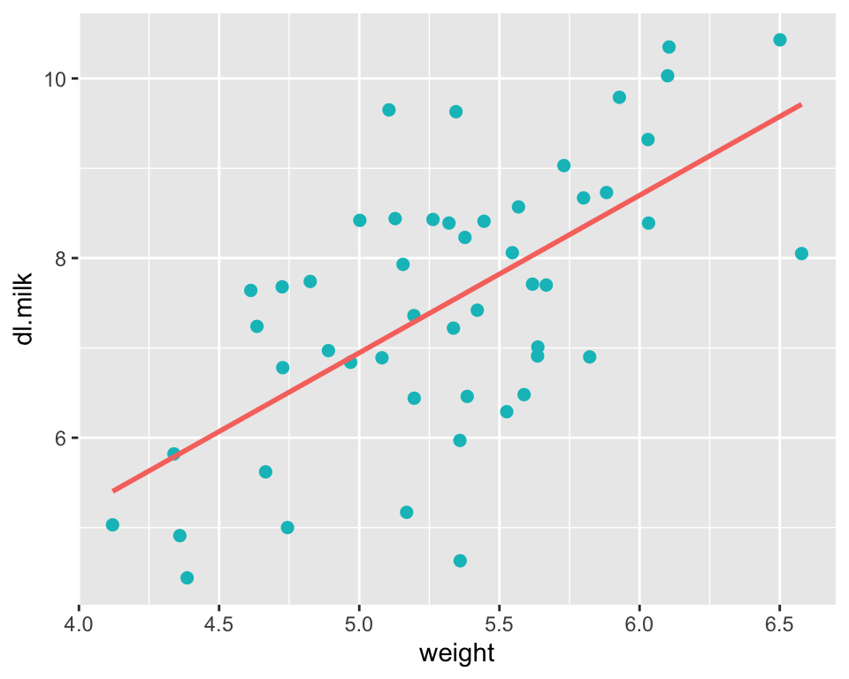
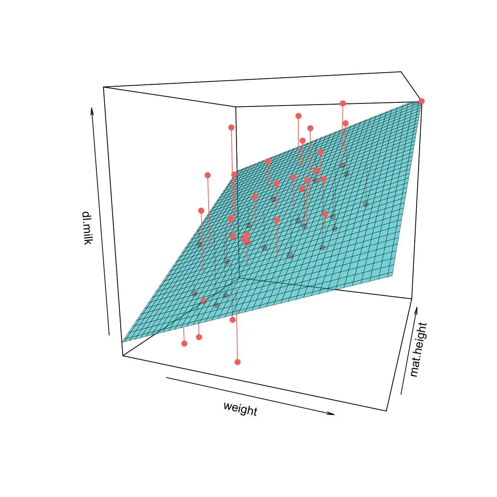
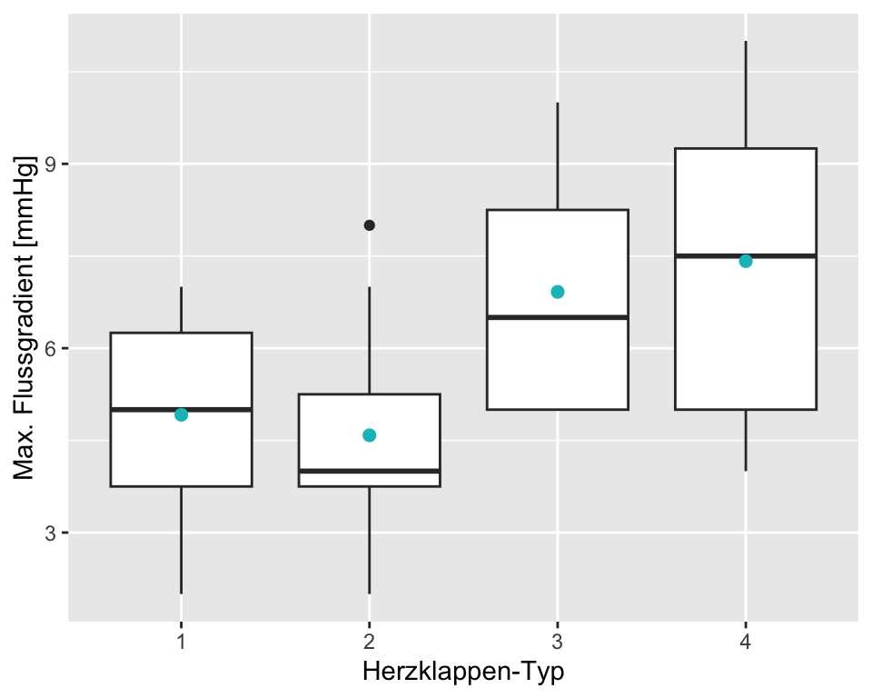
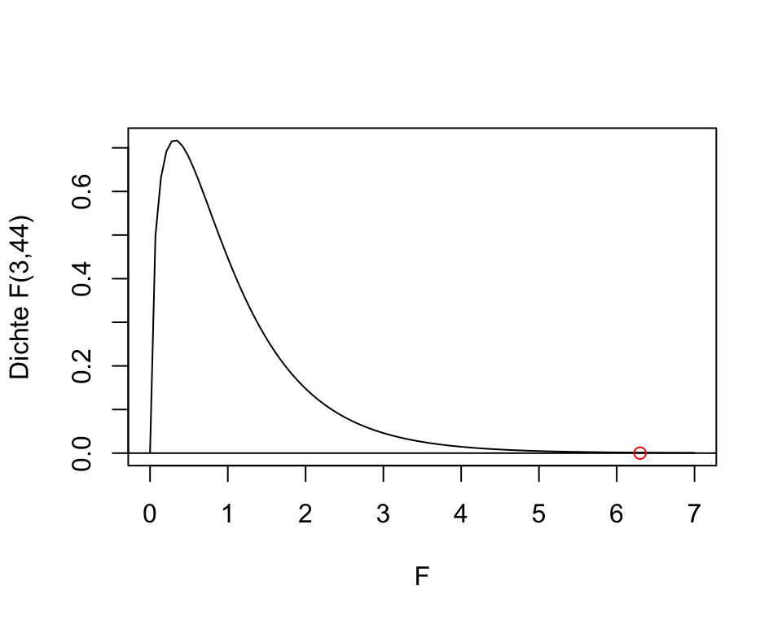
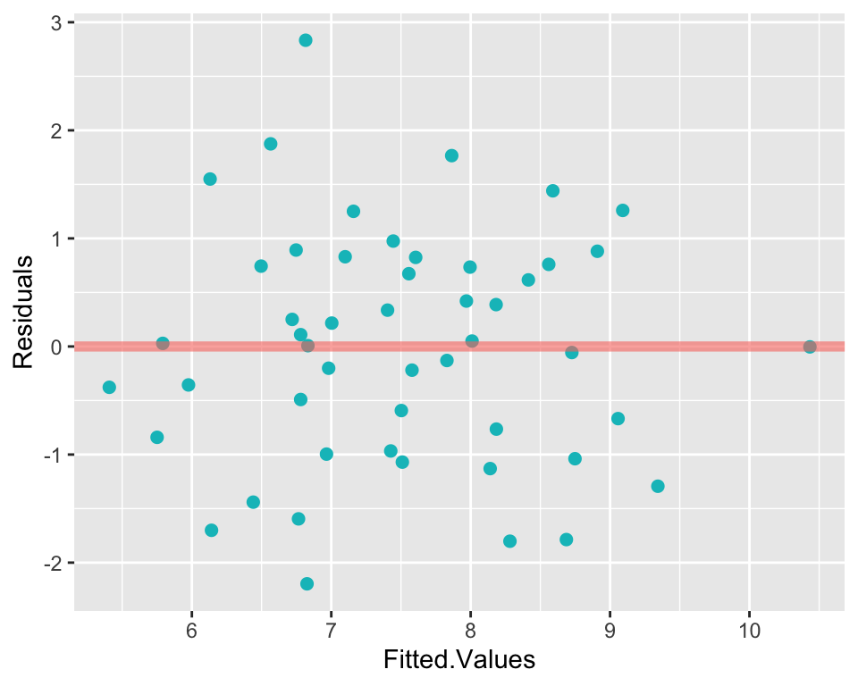
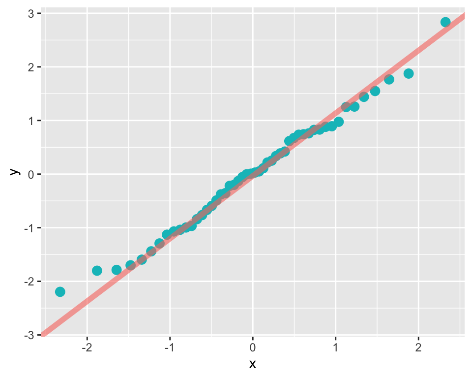

| dl.milk | sex | weight | ml.suppl | mat.height | |
|---|---|---|---|---|---|
| Min. : 4.440 | boy :25 | Min. :4.120 | Min. : 0.00 | Min. :153.0 | |
| 1st Qu.: 6.555 | girl:25 | 1st Qu.:4.977 | 1st Qu.: 16.25 | 1st Qu.:162.0 | |
| Median : 7.660 | NA | Median :5.352 | Median : 57.50 | Median :167.0 | |
| Mean : 7.504 | NA | Mean :5.319 | Mean : 96.00 | Mean :167.4 | |
| 3rd Qu.: 8.428 | NA | 3rd Qu.:5.637 | 3rd Qu.:103.75 | 3rd Qu.:172.0 | |
| Max. :10.430 | NA | Max. :6.578 | Max. :590.00 | Max. :185.0 |
7 Multiple lineare Regression
Zugegeben, die einfache lineare Regression ist vielleicht nicht ganz so einfach. Dafür ist die multiple lineare Regression nicht viel schwieriger.
Mittels einer einfachen linearen Regression möchte man eine kontinuierliche abhängige Variable mit Hilfe einer unabhängigen Variable erklären. Mittels multipler linearer Regression möchte man eine kontinuierliche abhängige Variable mit Hilfe mehrerer unabhängiger Variablen erklären. Die multiple lineare Regression wird daher manchmal auch mehrfache lineare Regression genannt.
Stellen Sie sich vor, sie wollen das Blutvolumen auf Grundlage des Körpergewichts schätzen (= einfache lineare Regression). Könnte diese Schätzung eventuell genauer ausfallen, wenn wir zusätzlich noch andere Variablen wie das Geschlecht oder die Muskelmasse als erklärende Variablen ins Modell einschliessen? ( = multiple lineare Regression).
aus
\[ \widehat{Blutvolumen} = \hat{\beta}_0 + \hat{\beta}_1 Körpergewicht \]
wird
\[ \widehat{Blutvolumen} = \hat{\beta}_0 + \hat{\beta}_1 Körpergewicht + \hat{\beta}_2 Geschlecht+\hat{\beta}_3Muskelmasse. \]
7.1 Lernziele
Important
Definiere die erklärenden Variablen als unabhängige Variablen (Prädiktoren) und die Antwortvariable als abhängige Variable.
Bei einem Modell mit \(Y\) als abhängiger Variable, \(m\) Eingangrössen und \(n\) Beobachtungen wird das lineare Regressionsmodell gebildet als
\[ Y_i = \beta_0 + \beta_1 x_{i1} + \beta_2 x_{i2}+ \dots + \beta_m x_{im} + \epsilon_i, \quad i = 1, \dots, n, \]
wobei der Koeffizient \(\beta_0\) den Schnittpunkt mit der y-Achse (Achsenabschnitt, engl. intercept) und die Koeffizienten \(\beta_1, \beta_2, ..., \beta_m\) die \(m\) die jeweiligen Steigungen einer “Hyperebene” beschreiben. Das Modell hat also \(p=m+1\) Parameter. Die Punktschätzungen (aus den beobachteten Daten) für \(\beta_0\) und \(\beta_1, \beta_2, ..., \beta_m\) sind \(\hat{\beta}_0\) bzw. \(\hat{\beta}_1, \hat{\beta}_2, ..., \hat{\beta}_m\). Beachte, dass bei für einen kategoriellen Prädiktor mit \(k\) Ausprägungen \(k-1\) Steigungen geschätzt werden.
Definiere Residuen \(r_i\) als Differenz zwischen den beobachteten \(y_i\) und den durch das Modell vorhergesagten (gefitteten) \(\hat{y}_i\) Werten der abhängigen Variablen.
Beachte, dass die Regressionskoeffizienten, wie bei der einfachen linearen Regression, so gewählt werden, dass die Summe der quadrierten Residuen minimiert wird.
Nenne die Bedingungen dafür, dass die Konfidenzintervalle und Hypothesentests für die Regressionskoeffizienten gültig sind und überprüfe diese:
- Fehler haben Erwartungswert 0 → Residuen-Plot
- Fehler haben konstante Variabilität (Homoskedastizität) → Residuen-Plot
- Fehler sind unabhängig und normalverteilt → QQ-Plot
Interpretiere die Steigungen \(\beta_1, \beta_2, ..., \beta_m\) wie folgt:
- “Für jede Einheit, um die sich der Wert \(x\) der jeweiligen Eingangsgrösse erhöht, erwarten wir, dass \(Y\) im Durchschnitt um \(|\beta_1|\) Einheiten grösser bzw. kleiner wird.” Dies unter der Berücksichtigung, dass alle anderen unabhängigen Variablen fixiert, das heisst gleich gehalten werden.
- Beachte dass es vom Vorzeichen der Steigung abhängig ist, ob der Wert der abhängigen Variable zu- oder abnimmt.
Interpretiere \(\beta_0\) (intercept) folgendermassen: “Wenn alle unabhängigen Variablen \(x_1=x_2= \dots= x_m = 0\), nimmt \(Y\) im Durchschnitt den Wert von \(\beta_0\) an.”
Berechne den Schätzwert der abhängigen Variablen für Einheit \(i\) durch Einsetzen von \(x_{i1}\dots,x_{im}\) in den linearen Prädiktor mit den Schätzwerten der Parameter:
\[ \hat{Y}_i=\hat{\beta}_0+\hat{\beta}_1x_{i1}+\hat{\beta}_2x_{i2}+\hat{\beta}_3x_{i3} + \dots + \hat{\beta}_mx_{im} \]
- Verwende nur Werte für \(x_{i1}\dots, x_{im}\), die im Bereich der beobachteten Daten liegen.
- Extrapoliere nicht über die Variationsbreite hinaus, ausser du bist dir sicher, dass das lineare Muster darüber hinaus gültig ist.
Definiere das Bestimmtheitsmass \(R^2\) als den Anteil der Variabilität der abhängigen Variablen, der durch die unabhängige Variable erklärt wird:
\[ R^2 = \frac{SS_{model}}{SS_{total}} \]
Interpretiere den F-Test als statistischen Test, welcher die folgende Nullhypothese prüft:
\[ \beta_1=\beta_2= \dots= \beta_m = 0 \]
Führe die multiple lineare Regression in
Rdurch.Interpretiere jede Zeile des
ROutputs.
7.2 Mehrere quantitative Prädiktoren
Wir verwenden als Beispiel einen Datensatz, welcher Daten für 50 Säuglinge im Alter von etwa 2 Monaten enthält (Dalgaard 2008). Die Säuglinge wurden unmittelbar vor und nach jedem Stillen gewogen, um die Aufnahme von Muttermilch zu bestimmen. Dazu wurden verschiedene andere Daten registriert.
Codebook zum Datensatz:
| Variable | Beschreibung |
|---|---|
no |
ein numerischer Vektor, Identifikationsnummer. |
dl.milk |
ein numerischer Vektor, Muttermilchaufnahme (dl/24h). |
sex |
ein Faktor mit den Ausprägungen boy und girl. |
weight |
ein numerischer Vektor, Gewicht des Kindes (kg). |
ml.suppl |
ein numerischer Vektor, Zusatzmilchersatz (ml/24h). |
mat.height |
ein numerischer Vektor, Größe der Mutter (cm). |
In Tabelle 7.1 sehen Sie einige deskriptiven Statistiken zum Datensatz. Ziel der multiplen linearen Regression ist es, die abhängige Variable dl.milk durch mehrere unabhängige Variablen zu erklären.
7.2.1 Grafische Darstellung einer multiplen Regression
Bei Korrelationsanalysen, bzw. bei der einfachen linearen Regression ist es Standard, sich die Daten zuerst in einem Scatterplot anzuschauen. Für das Model \(\widehat{dl.milk} = \hat{\beta}_0 + \hat{\beta}_1weight\) sieht dieser wie folgt aus:

Da wir in diesem Fall nur zwei Variablen haben (eine abhängige und eine unabhängige), reichen zwei Achsen aus, um die Daten darzustellen. Kommen weitere unabhängige Variablen dazu, was bei multiplen Regressionen immer der Fall ist, geht das aber nicht mehr. Ein Spezialfall ist die Situation mit einer abhängigen und zwei unabhängigen Variablen, wo man insgesamt drei Variablen hat und daher einen dreidimensionalen Plot zeichnen kann (jede der drei Achsen repräsentiert eine Variable). In der Praxis verwendet man dreidimensionale Plots eher selten. Abbildung 7.2 wird hier nur gezeigt, damit Sie das Prinzip der multiplen linearen Regression besser verstehen.

Wie man in Abbildung 7.2 sieht, wird bei einer multiplen linearen Regression nicht mehr eine Gerade, sondern eine Ebene (bei mehr als zwei Eingangsgrössen “Hyperebene”) angepasst. Und zwar ist es die Ebene, welche die quadrierten Abstände zu den beobachteten Werten (rot) minimiert! Das Prinzip ist also genau gleich wie bei der einfachen linearen Regression. Diese Fläche kann nun verwendet werden, um die abhängige Variable dl.milk mit Hilfe der beiden unabhängigen Variablen weight und mat.height zu schätzen. Man sieht, dass dl.milk durchschnittlich stiegt, wenn die Variable weight grössere Werte annimmt (das konnte man bereits in Abbildung 7.1 feststellen). Man sieht aber auch, dass dl.milk durchschnittlich stiegt, wenn die Variable mat.height grössere Werte annimmt. Es scheint also, dass mit Hilfe der Information von weight und mat.height die Varialble dl.milk besser geschätzt werden kann, als wenn man nur eine der beiden unabhängigen Variablen zur Verfügung hätte. Genau das ist die Idee multipler Regressionsmodelle: Man möchte durch Hinzunahme weiterer Infomationsquellen (Prädiktoren) die Schätzung und somit die Güte eines Modells verbessern.
7.2.2 Multiple lineare Regression mit R
Wir schauen uns zunächst den R-Output des einfachen linearen angepassten Regressionsmodells für \(\widehat{dl.milk} = \hat{\beta}_0 + \hat{\beta}_1weight\) an:
Call:
lm(formula = dl.milk ~ weight, data = df.breast.feeding)
Residuals:
Min 1Q Median 3Q Max
-2.9467 -0.8973 0.1148 0.8757 2.5186
Coefficients:
Estimate Std. Error t value Pr(>|t|)
(Intercept) -1.821 1.641 -1.110 0.273
weight 1.753 0.307 5.711 6.92e-07 ***
---
Signif. codes: 0 '***' 0.001 '**' 0.01 '*' 0.05 '.' 0.1 ' ' 1
Residual standard error: 1.178 on 48 degrees of freedom
Multiple R-squared: 0.4046, Adjusted R-squared: 0.3921
F-statistic: 32.61 on 1 and 48 DF, p-value: 6.915e-07Zuoberst im Output ist die Formel ersichtlich, damit man weiss, um was für ein Modell es sich handelt. Als Nächstes ist dem Output zu entnehmen, dass der Median der Residuen zwar nicht genau, aber sehr nahe bei 0 liegt und dass die Quartile sowie das Minimum und das Maximum symmetrisch um den Median verteilt sind. Mehr zur Residuendiagnostik folgt weiter unten.
Das geschätzte Intercept \(\hat{\beta}_0\) beträgt -1.821 und unterscheidet sich nicht signifikant von 0, was allerdings inhaltlich nicht sinnvoll interpretierbar ist (Kinder mit einem Gewicht von 0 kg sind wohl nicht von Interesse in dieser Analyse). Die Steigung der Variable weight, \(\hat{\beta}_1\), beträgt 1.753 mit einem sehr kleinen P-Wert. Durchschnittlich steigt also die Milchaufnahme um 1.753 dl, pro zusätzliches kg Körpergewicht des Kindes. Denken Sie bei der Interpretation der P-Werte von Koeffizienten immer daran, was die dazugehörige Nullhypothese ist.
Im letzten Abschnitt folgen die Standardabweichung der Residuen (=1.178), die Anzahl Freiheitsgrade (im Modell wurden zwei Koeffizienten geschäzt, \(n-2=48\)), \(R^2\), sowie die F-Statistik. Beachten Sie, dass in diesem einfachen Modell 40.46% der Variabilität der abhängigen Variable dl.milk erklärt werden kann. Beachten Sie auch, dass in einem einfachen linearen Regressionsmodell der P-Wert des F-Tests der gleiche ist, wie jener von \(\hat{\beta}_1\).
Im nächsten Modell wird nun die Variable mat.height ergänzt: \(\widehat{dl.milk} = \hat{\beta}_0 + \hat{\beta}_1weight + \hat{\beta}_2mat.height\):
# Generieren des multiplen Regressionsmodells:
lm.milk.weight.height <- lm(dl.milk ~ weight + mat.height, data = df.breast.feeding)
summary(lm.milk.weight.height) # Ausgabe einer Zusammenfassung des Modells
Call:
lm(formula = dl.milk ~ weight + mat.height, data = df.breast.feeding)
Residuals:
Min 1Q Median 3Q Max
-2.19598 -0.82149 0.01822 0.75582 2.83375
Coefficients:
Estimate Std. Error t value Pr(>|t|)
(Intercept) -11.92014 4.07325 -2.926 0.00527 **
weight 1.42862 0.31338 4.559 3.67e-05 ***
mat.height 0.07063 0.02636 2.680 0.01013 *
---
Signif. codes: 0 '***' 0.001 '**' 0.01 '*' 0.05 '.' 0.1 ' ' 1
Residual standard error: 1.109 on 47 degrees of freedom
Multiple R-squared: 0.4835, Adjusted R-squared: 0.4615
F-statistic: 22 on 2 and 47 DF, p-value: 1.811e-07Was hat sich verändert? Abgesehen von den Werten selbst ist die wichtigste Änderung, dass unter Coefficients eine neue Zeile mit den Angaben zu \(\hat{\beta}_2\), der Steigung der Variable mat.height hinzugekommen ist. Schauen wir uns die Koeffizienten noch einmal von oben nach unten an.
\(\hat{\beta}_0\) beträgt -11.92. Warum ist \(\hat{\beta}_0\) im multiplen Modell ein ganz anderer Wert als im einfachen Modell? Weil \(\hat{\beta}_0\) auch inhaltlich etwas ganz anderes bedeutet. Es ist nicht mehr der durchschnittliche Wert von dl.milk wenn weight = 0, sondern es ist der durchschnittliche Wert von dl.milk wenn weight = 0 UND mat.height = 0.
\(\hat{\beta}_1\) ist immer noch signifikant verschieden von 0, hat sich aber im Vergleich mit dem einfachen Modell von 1.753 auf 1.429 reduziert. In multiplen Regressionsmodellen sind Steigungen immer unter Berücksichtigung aller anderen Variablen im Modell zu interpretieren. Unter Berücksichtigung bedeutet, dass die anderen Variablen fix gehalten werden. Konkret bedeutet \(\hat{\beta}_1\) in diesem Fall, dass die Milchaufnahme pro Kilogramm Körpergewicht des Kindes um 1.429 dl steigt, bei gleicher Körpergrösse der Mutter. Man könnte es auch so ausdrücken, dass der Effekt des Körpergewichts des Kindes für die Körpergrösse der Mutter korrigiert oder adjustiert wurde. Das Körpergewicht des Kindes und die Körpergrösse der Mutter sind also nicht ganz unabhängig voneinander. Man kann dies einfach prüfen, in dem man den Korrelationskoeffizient \(r\) für weight und mat.height berechnet. Dieser beträgt immerhin 0.387. Weil also ein Teil der Information von weight auch in mat.height steckt, hat sich der Koeffizient \(\hat{\beta}_1\) entsprechend angepasst. Je stärker die unabhängigen Variablen mit einander korrelieren, desto stärker ist dieser Effekt.
Note
Die Regressionskoeffizienten einer einfachen und einer multiplen Regression stimmen nur dann überein, wenn die Prädiktoren unkorreliert sind, was im Allgemeinen nicht der Fall ist. Eine multiple Regression sagt also viel mehr aus als eine einfache Regression.
Die Steigung von mat.height, \(\hat{\beta}_2\), beträgt unter Berücksichtigung der Variable weight 0.071 und ist mit einem P-Wert von 0.01 statistisch signifikant unterschiedlich von 0. Beachten Sie wiederum, dass diese Steigung anders ausfallen würde, wenn man nicht für die Variable weight korrigiert (tatsächlich wäre die Steigung dann 0.117).
Wie auch bei der einfachen linearen Regression kann man sich mit dem R-Befehl confint() die Vertrauensintervalle aller Regressionskoeffizienten ausgeben lassen:
confint(lm.milk.weight.height) 2.5 % 97.5 %
(Intercept) -20.11445621 -3.7258288
weight 0.79817372 2.0590682
mat.height 0.01760219 0.1236553Konfidenzintervalle bekommen wir auch mit
Parameter | Coefficient | SE | 95% CI | t(47) | p
-------------------------------------------------------------------
(Intercept) | -11.92 | 4.07 | [-20.11, -3.73] | -2.93 | 0.005
weight | 1.43 | 0.31 | [ 0.80, 2.06] | 4.56 | < .001
mat height | 0.07 | 0.03 | [ 0.02, 0.12] | 2.68 | 0.010 Man kann die geschätzten Regressionskoeffizienten nun in die Gleichung einsetzten und für ein bestimmtes Körpergewicht vom Kind (z.B. 4kg) und eine bestimmte Körpergrösse der Mutter (z.B. 165cm) die Milchaufnahme schätzen:
\[ \widehat{dl.milk} = \hat{\beta}_0 + \hat{\beta}_1weight + \hat{\beta}_ 2mat.height \]
\[ \widehat{dl.milk} = -11.92014 + 1.42862 \times 4 + 0.07063 \times 165 = 5.44829 \]
Dieses Vorgehen ist analog für Modelle mit mehr als zwei unabhängigen Variablen.
Im letzten Abschnitt des Outputs sehen wir, dass das Modell nun nur noch 47 Freiheitsgrade hat, da drei Koeffizienten geschätzt wurden. \(R^2\) ist neu 0.4835, man kann mit dem multiplen Modell also etwas mehr der Variabilität von dl.milk erklären als mit dem einfachen Modell. \(R^2\) wird bei multiplen linearen Regressionen genau gleich berechnet wie beim einfachen linearen Regressionsmodell (siehe Section 6.4.5 )
\[ R^2 = \frac{SS_{model}}{SS_{total}} \]
SS.tot <- sum((df.breast.feeding$dl.milk - mean(df.breast.feeding$dl.milk))^2)
SS.res <- sum(lm.milk.weight.height$residuals^2)
SS.model <- SS.tot - SS.res
(R2 <- SS.model/SS.tot)[1] 0.48346177.3 Qualitative Prädiktoren mit > 2 Kategorien
Im Kapitel zur einfachen linearen Regression haben Sie gesehen, dass auch qualitative Prädiktoren verwendet werden können, um \(Y\) zu erklären. Im Falle einer binären Prädiktorvariable entspricht die einfache lineare Regression exakt einem t-Test (siehe Section 6.7 ). Stellen Sie sich nun vor, Sie haben eine qualitative Prädiktorvariable mit mehr als zwei Kategorien. Wir illustrieren diese Situation anhand eines Beispiels, wo die Auswirkungen von vier verschiedenen Herzklappentypen (type) auf den maximalen Flussgradienten in mmHg (flow) in einem Simulator des menschlichen Kreislaufsystems verglichen wurden.

Wenn in einer multiplen Regression die erklärenden Variablen kategorial sind, sprechen gewisse Leute lieber von Analysis of Variance, kurz ANOVA und nicht von einer multiplen linearen Regression. In Situationen mit nur einer qualitativen Prädiktorvariable (wie in unserem Beispiel), ist teilweise der Begriff One-Way-ANOVA gebräuchlich. Damit keine Verwirrung aufkommt: Eine ANOVA und eine multiple lineare Regression führen zum gleichen Resultat, wie Sie in den folgenden Kapiteln noch sehen werden. Wir sind jedoch der Meinung, dass der Output von lm() informativer ist und bevorzugen deshalb diesen Approach.
| type | mean | sd | n |
|---|---|---|---|
| 1 | 4.917 | 1.730 | 12 |
| 2 | 4.583 | 1.730 | 12 |
| 3 | 6.917 | 1.832 | 12 |
| 4 | 7.417 | 2.392 | 12 |
Bevor wir uns den Details widmen, schauen wir den Regressionsoutput an:
lm.heart <- lm(flow ~ type, data = df.hv)
summary(lm.heart)
Call:
lm(formula = flow ~ type, data = df.hv)
Residuals:
Min 1Q Median 3Q Max
-3.4167 -1.6667 -0.1667 1.5833 3.5833
Coefficients:
Estimate Std. Error t value Pr(>|t|)
(Intercept) 4.9167 0.5601 8.777 3.18e-11 ***
type2 -0.3333 0.7922 -0.421 0.67596
type3 2.0000 0.7922 2.525 0.01526 *
type4 2.5000 0.7922 3.156 0.00289 **
---
Signif. codes: 0 '***' 0.001 '**' 0.01 '*' 0.05 '.' 0.1 ' ' 1
Residual standard error: 1.94 on 44 degrees of freedom
Multiple R-squared: 0.3037, Adjusted R-squared: 0.2562
F-statistic: 6.396 on 3 and 44 DF, p-value: 0.001082Dem Output ist zu entnehmen, dass vier Parameter geschätzt wurden: Das Intercept und drei Steigungen. Bei linearen Regressionsmodellen werden für eine qualitative Prädiktorvariable mit \(k\) Kategorien immer \(m = k-1\) Steigungen und ein Intercept geschätzt. Analog zur einfachen linearen Regression mit einer binären Prädiktorvariable, repräsentiert das Intercept den Mittelwert der Referenzgruppe (in diesem Fall type == 1) und die drei Steigungen repräsentieren die jeweiligen Mittelwertsdifferenzen zu dieser Referenzgruppe. In der hintersten Spalte sehen Sie die P-Werte für die einzelnen Regressionskoeffizienten. Die t-Tests, welche diese P-Werte liefern, testen jeweils die Nullhypothese, dass diese Regressionskoeffizienten 0 sind. Analog zur einfachen linearen Regression erhalten Sie mit confint() die 95% CI’s für die Koeffizienten.
Die Regressionsgleichung kann wie gehabt aufgestellt werden:
\[ Y_i = \beta_0 + \beta_1 \times type_{i2} + \beta_2 \times type_{i3} + \beta_3 \times type_{i4} + \epsilon_i \]
mit den Indikatorvariablen
\[\begin{equation*} type_{ik}= \begin{cases} 1& \text{Beobachtung\,} i \text{\,gehört zu\, Kategorie\,} k\\ 0& \text{\,sonst}. \end{cases} \end{equation*}\]
Interessierte können sich die Codierung der Prädiktorvariable type mit model.matrix(lm.heart) anschauen.
Es werden also die Effekte relativ zu einer Referenzkategorie (die alphabetisch erste, wenn man die Kategorien nicht sonst ordnet) als Parameter gesetzt. Der erste Parameter \(\beta_0\) steht dann für den Erwartungswert in der Referenzgruppe (Intercept), alle anderen Parameter für den erwarteten Unterschied zur Referenzgruppe:
- \(\beta_0=\mu_1\): Durchschnitt Referenzgruppe
- \(\beta_1=\mu_2-\mu_1\): Erwarteter Unterschied der zweiten Gruppe zur Referenz
- \(\beta_2=\mu_3-\mu_1\): Erwarteter Unterschied der dritten Gruppe zur Referenz
- \(\beta_3=\mu_4-\mu_1\): Erwarteter Unterschied der \(k\)-ten Gruppe zur Referenz
Mit dem angepassten Modell haben wir
\[ \hat{Y}_i = \hat{\beta_0} + \hat{\beta_1} \times type_{i2} + \hat{\beta_2} \times type_{i3} + \hat{\beta_3} \times type_{i4}. \]
Was ist also der geschätzte Mittelwert für die Herzklappe vom Typ 3?
\[ \hat{Y} = \hat{\beta_0} + \hat{\beta_1} \times 0 + \hat{\beta_2} \times 1 + \hat{\beta_3} \times 0 = \hat{\beta_0} + \hat{\beta_2} = 4.9167 + 2 = 6.9167=\mu_3. \]
Sie können dies für einen belieben Typ tun und das Resultat anhand Tabelle 7.2 verifizieren.
7.4 F-Test
Wenn wir zwei Mittelwerte miteinander Vergleichen, dann können wir einen t-Test durchführen, um die Hypothese \(\mu_1 = \mu_2\) zu testen. Die Ergebnisse dieser t-Tests sehen sie wie oben erwähnt im Output der multiplen Regression. Z. B. ist für die Mittelwertsdifferenz zwischen dem Typ 1 und dem Typ 3 \(p = 0.015\). Es ist allerdings problematisch, für alle \(\frac{k(k-1)}{2}\) paarweisen Vergleiche einen t-Test durchzuführen, weil bei jedem t-Test eine gewisse Wahrscheinlichkeit für einen \(\alpha\)-Fehler besteht und sich diese Wahrscheinlichkeit mit zunehmender Anzahl Tests kumuliert. Wenn wir \(k>2\) Mittelwerte miteinander vergleichen, brauchen wir eine Methode, welche die Nullhypothese \(\mu_1 = \mu_2 = \dots = \mu_k\) simultan testet. Beachten Sie, dass die Nullhypothese \(\mu_1 = \mu_2 = \dots = \mu_k\) gleichbedeutend ist wie \(\beta_1 = \beta_2 = \dots = \beta_{m} = 0\), wobei \(m = k-1\). Wenn diese Nullhypothese verworfen wird, dann wissen wir, dass sich mindestens ein Mittelwert von den anderen unterscheidet. Welche/r das ist/sind, muss mit spezifischen Methoden untersucht werden (Post-hoc Tests).
Beim Beispiel mit den künstlichen Herzklappen haben wir \(k=4\) Gruppen und somit \(m=k-1=3\) Steigungen:
\[ H_0: \beta_1=\beta_2= \beta_3 = 0,~ bzw.~ \mu_1 = \mu_2 = \mu_3 = \mu_4 \]
\[ H_A: mindestens~ ein~ \beta_j \ne 0; (j = 1, ..., m) \]
Die oben formulierte Nullhypothese testet man mit einem F-Test. Das Resultat des F-Tests sehen Sie im Regressionsoutput ganz unten. Der F-Test ergibt \(p = 0.001\). Somit wird \(H_0\) zugunsten von \(H_A\) verworfen. Dies ist keine grosse Überraschung, weil ja schon bei zwei der drei Steigungen sehr kleine P-Werte resultierten. Dies muss aber nicht immer der Fall sein, wie das folgende Beispiel zeigt:
Call:
lm(formula = Y ~ group, data = data)
Residuals:
Min 1Q Median 3Q Max
-8.0757 -2.1820 0.2733 1.8138 6.4643
Coefficients:
Estimate Std. Error t value Pr(>|t|)
(Intercept) 10.2364 0.5989 17.092 <2e-16 ***
group2 1.1983 0.8470 1.415 0.160
group3 2.0703 0.8470 2.444 0.016 *
group4 0.6393 0.8470 0.755 0.452
---
Signif. codes: 0 '***' 0.001 '**' 0.01 '*' 0.05 '.' 0.1 ' ' 1
Residual standard error: 3.28 on 116 degrees of freedom
Multiple R-squared: 0.05266, Adjusted R-squared: 0.02816
F-statistic: 2.15 on 3 and 116 DF, p-value: 0.09779Obwohl sich laut t-Test die Gruppe 3 vermeintlich statistisch signifikant von Gruppe 1 (Referenzgruppe) unterscheidet, kann anhand des globalen F-Tests die Nullhypothese \(\mu_1 = \mu_2 = \mu_3 = \mu_4\) nicht verworfen werden! Es ist daher wichtig, immer zuerst den globalen F-Test zu betrachten und erst dann allfällige (vordefinierte) Paarvergleiche anzustellen.
Das Resultat des F-Tests sieht man auch im Output der aov() Funktion, auch wenn dieser Output, wie oben bereits erwähnt, etwas magerer ist:
summary(aov(model)) Df Sum Sq Mean Sq F value Pr(>F)
group 3 69.4 23.13 2.15 0.0978 .
Residuals 116 1248.2 10.76
---
Signif. codes: 0 '***' 0.001 '**' 0.01 '*' 0.05 '.' 0.1 ' ' 17.4.1 Wie funktioniert der F-Test (Exkurs)
Die Teststatistik \(F\) wird anhand der Sum of Squares (SS) berechnet, welche Sie bereits im letzten Kapitel kennengelernt haben. Im Beispiel mit den künstlichen Herzklappen haben wir \(k=4\) Gruppen mit jeweils \(n_j = 12\) Beobachtungen. \(SS_{total}\) beschreibt die totale Variabilität und ist nichts anderes als die Summe der quadrierten Abstände zwischen den einzelnen Beobachtungen und dem Gesamtmittelwert \(\bar{y}_{tot}\):
\[
SS_{total} = \sum_{j = 1}^k \sum_{i = 1}^{n_j} (y_{ij} - \bar{y}_{tot})^2
\] In R:
(SS.tot <- sum((df.hv$flow - mean(df.hv$flow))^2))[1] 237.9167\(SS_{total}\) ist also die Variabilität des maximalen Flussgradienten, wenn wir die verschiedenen Typen von Herzklappen nicht unterscheiden würden. Wir schauen uns als nächstes an, wie gross die Variabilität innerhalb der Gruppen ist. \(SS_{residual}\) (manchmal auch \(SS_{within}\)) ist die Summe der quadrierten Abstände zwischen den einzelnen Beobachtungen \(i\) zu ihrem eigenen Gruppenmittelwert \(\bar{y}_j\):
\[
SS_{residual} = \sum_{j = 1}^k \sum_{i = 1}^{n_j} (y_{ij} - \bar{y}_{j})^2
\] In R:
# calculate mean for each group
means <- df.hv %>%
group_by(type) %>%
summarise(mean = mean(flow)) %>%
select(mean)
# add group mean as variable to data frame
df.hv$means <- rep(means$mean, each = 12)
# Calc SS within group
(SS.residual <- sum((df.hv$flow - df.hv$means)^2))[1] 165.6667\(SS_{residual}\) ist die Variabilität der Daten, welche trotz Kenntnis über die verschiedenen Typen von Herzklappen nicht erklärt werden kann (res steht für Residuals). Somit ist klar, dass die Variabilität durch die Berücksichtigung des Typs um \(SS_{model} = SS_{total} - SS_{residual} = 237.9167 - 165.6667 = 72.25\) reduziert werden konnte. Relativ gesehen sind das \(\frac{SS_{model}}{SS_{total}} = \frac{72.25}{237.9167} = 0.3037\). Das entspricht exakt dem \(R^2\) aus dem Output oben.
Um die F-Statistik zu berechnen, braucht man zuerst die Mean Sum of Squares (\(MS\)). Diese erhält man, wenn man die SS durch die jeweiligen Freiheitsgrade \(df\) teilt. Für die vorliegende Situation sind die Freiheitsgrade wie folgt:
- \(df_{reg} = k - 1\), für unseren Fall also \(4-1=3\)
- \(df_{res} = N - k\), wo bei \(N = \sum_{j = 1}^k n_j\), für unseren Fall also \(48-4=44\)
Somit sind
- \(MS_{reg} = \frac{SS_{model}}{df_{reg}} = \frac{72.25}{3} = 24.08333\)
- \(MS_{res} = \frac{SS_{residual}}{df_{res}} = \frac{165.6667}{44} = 3.765152\)
Wenn \(H_0\) wahr ist, dann gibt es keinen Effekt der Prädiktoren. Mann kann dann zeigen, dass der Quotient \(F=\frac{MS_{re g}}{MS_{res}}\) unter \(H_0\) einer \(F\)-Verteilung folgt mit Zählerfreiheitsgrad \(k-1\) und Nennerfreiheitsgrad \(N-k\): \[\begin{equation} \boxed{F=\frac{MS_{reg}}{MS_{res}}\sim F_{k-1,N-k}} \end{equation}\]
Die \(F\)-Verteilung ist in R implementiert mit rf(),df(),qf(),pf().
Der Wert der \(F\)-Statistik beträgt nun \(\frac{MS_{reg}}{MS_{res}} = \frac{24.08333}{3.76515}=6.396377\). Diese Statistik ist \(F\)-Verteilt mit den Freiheitsgraden 3 und 44:

Wir können den P-Wert, also die Wahrscheinlichkeit für eine solche oder extremere Teststatistik unter \(H_0\) mit R abrufen. Das ist dann der \(F\)-test:
pf(6.396377, 3, 44, lower.tail = FALSE)[1] 0.001082042Alle diese Informationen finden sich im Output der Funktion aov():
summary(aov(lm.heart)) Df Sum Sq Mean Sq F value Pr(>F)
type 3 72.25 24.083 6.396 0.00108 **
Residuals 44 165.67 3.765
---
Signif. codes: 0 '***' 0.001 '**' 0.01 '*' 0.05 '.' 0.1 ' ' 17.4.2 Post-hoc tests
In einer klassischen One-Way-ANOVA-Situation wie beim Beispiel mit den Herzklappen kann es bei einem signifikanten F-Test sinnvoll sein, (gewisse) Paarweise Vergleiche zu machen. Idealerweise werden diese Vergleiche a priori definiert. Wie oben erläutert, ist es allerdings problematisch, zu diesem Zweck mehrere t-Tests durchzuführen. Die Thematik rund um das multiple Testen, verwandte Probleme und mögliche Lösungsvorschläge sprengen den Rahmen dieses Kurses bei weitem. Weil diese Art von Post-hoc Tests im Rahmen von Master-Thesen häufig gewünscht werden, möchte ich hier eine Möglichkeit in Form der Tukey’s ‘Honest Significant Difference’ Methode aufzeigen. Der Output der Funktion TukeyHSD() liefert für alle \(k(k-1)/2\) Vergleiche einen für multiples Testen adjustierten P-Wert und ein CI. Diese Methode sollte nur verwendet werden, wenn die Stichpobengrösse der verschiedenen Gruppen in etwa gleich ist (siehe Hilfemenü).
TukeyHSD(aov(lm.heart)) Tukey multiple comparisons of means
95% family-wise confidence level
Fit: aov(formula = lm.heart)
$type
diff lwr upr p adj
2-1 -0.3333333 -2.4484181 1.781751 0.9746327
3-1 2.0000000 -0.1150848 4.115085 0.0698549
4-1 2.5000000 0.3849152 4.615085 0.0147590
3-2 2.3333333 0.2182485 4.448418 0.0254869
4-2 2.8333333 0.7182485 4.948418 0.0046107
4-3 0.5000000 -1.6150848 2.615085 0.92143827.5 Vorgehen beim Erstellen einer multiplen linearen Regression.
Wie viele unabhängige Variablen kann man überhaupt in ein multiples lineares Regressionsmodell einschliessen? Grundsätzlich gilt, je grösser \(n\), desto mehr unabhängige Variablen können eingeschlossen werden. Eine gute Daumenregel ist, dass \(n \ge 10p\), wobei \(p\) = Anzahl geschätzter Regressionsparameter (Harrell , 2015a).
Es ist eine Tatsache, dass \(R^2\) mit zunehmender Anzahl Prädiktoren immer steigt und nie kleiner wird. Dies ist selbst dann der Fall, wenn der neue Prädiktor überhaupt nichts mit der abhänggigen Variablen zu tun hat. Gehen wir zurück zum Beispiel mit der Milchaufnahme von Säuglingen. Sie sehen im Code unten, dass per Zufall jeder Frau eine Haarfarbe zugeordnet wird. Obwohl dies zufällig geschieht (und die Haarfarbe wohl kaum etwas mit der Milchaufnahme des Kindes zu tun hat), ist \(R^2\) des Modells mit Haarfarbe leicht höher! Beachten Sie dabei, dass R die Variable hair alphabetisch sortiert. Das heisst \(\hat{\beta}_0\) ist der durchschnittliche Wert von dl.milk von Kindern mit 0 kg Körpergewicht, Müttern mit 0 cm Körpergrösse und Müttern mit schwarzen Haaren (black kommt im Alphabet zuerst und wird darum mit 0 kodiert).
# Erstellen eines Vektors mit Haarfarben (zufällig)
set.seed(123)
df.breast.feeding$hair <- sample(c("black", "brown", "blond"), 50, replace = TRUE)
# Fitten des Modells
lm.milk.weight.height.hair <- lm(dl.milk ~ weight + mat.height + hair, data = df.breast.feeding)
summary(lm.milk.weight.height.hair)
Call:
lm(formula = dl.milk ~ weight + mat.height + hair, data = df.breast.feeding)
Residuals:
Min 1Q Median 3Q Max
-2.2570 -0.8251 0.1361 0.6682 2.7040
Coefficients:
Estimate Std. Error t value Pr(>|t|)
(Intercept) -13.06733 4.23522 -3.085 0.003471 **
weight 1.32521 0.33163 3.996 0.000236 ***
mat.height 0.07912 0.02759 2.868 0.006270 **
hairblond 0.38680 0.40037 0.966 0.339151
hairbrown 0.42984 0.41686 1.031 0.307980
---
Signif. codes: 0 '***' 0.001 '**' 0.01 '*' 0.05 '.' 0.1 ' ' 1
Residual standard error: 1.118 on 45 degrees of freedom
Multiple R-squared: 0.4979, Adjusted R-squared: 0.4533
F-statistic: 11.16 on 4 and 45 DF, p-value: 2.259e-06Obwohl \(R^2\) trotz dieser offensichtlich unsinnigen Variable hair grösser geworden ist (vergleiche mit oben), heisst das nicht, dass hair ein wichtiger Prädiktor ist. Es ist aus diesem Grund besser, bei multiplen linearen Regressionen das Adjusted \(R^2\) zu betrachten. Dieses ist eine korrigierte Version des normalen \(R^2\), das Modellkomplexität (mehr Parameter) bestraft. Tatsächlich ist in diesem Fall das Adjusted \(R^2\) des Modells ohne die Haarfarbe besser.
Zu Übungszwecken schätzen wir anhand des neuen Modells noch einmal den durchschnittlichen Wert von dl.milk für ein Kind mit 4.5 kg Körpergewicht, eine Mutter mit einer Körpergrösse von 176 cm und braunen Haaren.
\[ \widehat{dl.milk} = \hat{\beta}_0 + \hat{\beta}_1weight + \hat{\beta}_2mat.height + \hat{\beta}_3blond + \hat{\beta}_4brown \]
\[ \widehat{dl.milk} = -13.06733 + 1.32521 \times 4.5 + 0.07912 \times 176 + 0.38680\times 0 + 0.42984 \times 1 = 7.25 \]
Die Variable hair wurde von R automatisch mit 0 und 1 codiert (sogenanntes dummy coding). In der folgenden Tabelle sehen Sie, wie das dummy coding im Falle der Haarfarbe funktioniert und wie sich für die verschiedenen Ausprägungen der Variable hair die entsprechende Regressionsgleichung zusammenstellt.
| Haarfarbe | Koeffizeint \(\hat{\beta}_3\) hairblond |
Koeffizient \(\hat{\beta}_4\) hairbrown |
Verwendete Koeffizienten in Bezug auf hair |
|---|---|---|---|
| Black | 0 | 0 | Nur das Intercept |
| Blond | 1 | 0 | Intercept + \(\hat{\beta}_3\) |
| Brown | 0 | 1 | Intercept + \(\hat{\beta}_4\) |
Weil im Beispiel oben die Frau braune Haare hat, wird der Koeffizient hairblond mit 0 multipliziert, jener bei hairbrown mit 1 (unterste Zeile der Tabelle). Hätte die Frau schwarze Haare, würden beide Koeffizeinten hairblond und hairbrown mit 0 multipliziert werden (erste Zeile).
Natürlich kann man die Gleichung im Fall oben entsprechend vereinfachen:
\[ \widehat{dl.milk} = -13.06733 + 1.32521 \times 4.5 + 0.07912 \times 176 + 0.38680 \times 0 + 0.42984 \times 1 = 7.25 \]
\[ = -13.06733 + 1.32521 \times 4.5 + 0.07912 \times 176 + 0.42984 = 7.25 \]
7.6 Wahl der Prädiktoren
Aber wie nun entscheiden, welche Variablen ins Modell eingeschlossen werden sollen und welche nicht? Auf diese Frage gibt es leider keine eindeutige Antwort. In diesem Kurs geht es darum, dass Sie Regressionsmodelle in R, basierend auf einer Vorlage, erstellen können und insbesondere, dass Sie den Output interpretieren können. Die Methoden, wie man diese Modelle genau anpasst, würden den Rahmen des Kurses sprengen. Aus diesem Grund folgt hier eine stark vereinfachte Methode, damit Sie ein Gefühl dafür bekommen, wie solche Modelle schrittweise aufgebaut werden. Interessierte Leser:innen verweise ich gerne auf die Fachliteratur (z.B. (Harrell , 2015b; Field et al. 2012)).
Wie oben angedeutet, erfolgt das Prozedere zur Anpassung eines Modells in den meisten Fällen schrittweise. Hier wird der sogenannte backwards stepwise approach gezeigt. Zusammengefasst funktioniert dieser Ansatz so, dass man zuerst ein Modell mit allen Prädiktoren erstellt und dann schrittweise jeweils den Prädiktor entfernt, welcher den höchsten P-Wert hat. Bei jedem Schritt überprüft man, ob sich das Modell dadurch verschlechtert hat. Dies kann man einerseits durch Beobachtung des Adjusted \(R^2\) tun, man kann dafür aber auch einen statistischen Test durchführen, d.h. testen, ob sich das Modell mit und ohne Prädiktor statistisch unterscheidet. Man tut das so lange, bis alle “unnötigen” Prädiktoren entfernt wurden.
Zuerst wird also das komplexeste Modell erstellt:
lm.full <- lm(dl.milk ~ sex + weight + ml.suppl + mat.height + hair, data = df.breast.feeding)
summary(lm.full)
Call:
lm(formula = dl.milk ~ sex + weight + ml.suppl + mat.height +
hair, data = df.breast.feeding)
Residuals:
Min 1Q Median 3Q Max
-1.8450 -0.7037 0.1388 0.6313 2.4858
Coefficients:
Estimate Std. Error t value Pr(>|t|)
(Intercept) -13.126959 4.154279 -3.160 0.002888 **
sexgirl -0.479456 0.311962 -1.537 0.131643
weight 1.264352 0.322850 3.916 0.000317 ***
ml.suppl -0.002393 0.001219 -1.963 0.056097 .
mat.height 0.084283 0.026736 3.152 0.002949 **
hairblond 0.437250 0.385702 1.134 0.263224
hairbrown 0.325088 0.401998 0.809 0.423150
---
Signif. codes: 0 '***' 0.001 '**' 0.01 '*' 0.05 '.' 0.1 ' ' 1
Residual standard error: 1.072 on 43 degrees of freedom
Multiple R-squared: 0.5589, Adjusted R-squared: 0.4974
F-statistic: 9.082 on 6 and 43 DF, p-value: 2.015e-06Wie zu erwarten war, haben die Steigungen für hair den grössten P-Wert. Wir sehen im Regressionsoutput nur die P-Werte für die Steigungen hairblond und hairbrown, dedoch nicht für die Variable hair insgesamt. Um zu untersuchen, ob die Variable hair insgesamt ein statistisch signifikanter Prädiktor für dl.milk ist, kann man wiederum den F-Test durchführen. Am einfachsten geht das über die Funktion `drop1()?:
drop1(lm.full, test = "F")Single term deletions
Model:
dl.milk ~ sex + weight + ml.suppl + mat.height + hair
Df Sum of Sq RSS AIC F value Pr(>F)
<none> 49.377 13.373
sex 1 2.7124 52.089 14.047 2.3621 0.1316426
weight 1 17.6112 66.988 26.625 15.3368 0.0003167 ***
ml.suppl 1 4.4262 53.803 15.665 3.8546 0.0560973 .
mat.height 1 11.4115 60.788 21.769 9.9377 0.0029488 **
hair 2 1.5423 50.919 10.911 0.6715 0.5161981
---
Signif. codes: 0 '***' 0.001 '**' 0.01 '*' 0.05 '.' 0.1 ' ' 1Im Output von drop1() sehen wir, dass die Variable hair den höchsten P-Wert hat. Folglich wird als erstes ein neues Modell, ohne die Variable hair erstellt:
lm.sex.weight.suppl.height <- lm(dl.milk ~ sex + weight + ml.suppl + mat.height, data = df.breast.feeding)
summary(lm.sex.weight.suppl.height)
Call:
lm(formula = dl.milk ~ sex + weight + ml.suppl + mat.height,
data = df.breast.feeding)
Residuals:
Min 1Q Median 3Q Max
-1.77312 -0.81196 -0.00683 0.76988 2.52240
Coefficients:
Estimate Std. Error t value Pr(>|t|)
(Intercept) -12.112571 3.997860 -3.030 0.00405 **
sexgirl -0.494675 0.308875 -1.602 0.11626
weight 1.372524 0.306612 4.476 5.14e-05 ***
ml.suppl -0.002313 0.001190 -1.943 0.05824 .
mat.height 0.076363 0.025560 2.988 0.00454 **
---
Signif. codes: 0 '***' 0.001 '**' 0.01 '*' 0.05 '.' 0.1 ' ' 1
Residual standard error: 1.064 on 45 degrees of freedom
Multiple R-squared: 0.5452, Adjusted R-squared: 0.5047
F-statistic: 13.48 on 4 and 45 DF, p-value: 2.658e-07Da das Adjusted \(R^2\) sogar gestiegen ist, ist es sicher eine gute Idee, hair aus dem Modell zu nehmen. Man kann auch statistisch zwei Modelle miteinander vergleichen und in diesem Fall zeigen, dass das Modell ohne hair nicht signifikant schlechter ist als das mit hair. Dazu kann man die anova() Funktion verwenden:
anova(lm.sex.weight.suppl.height, lm.full)Analysis of Variance Table
Model 1: dl.milk ~ sex + weight + ml.suppl + mat.height
Model 2: dl.milk ~ sex + weight + ml.suppl + mat.height + hair
Res.Df RSS Df Sum of Sq F Pr(>F)
1 45 50.919
2 43 49.377 2 1.5422 0.6715 0.5162Weil sich die Modelle, welche oben verglichen werden nur durch die Variable hair unterscheiden, ist der P-Wert der gleiche wie aus drop1(). Auch hier wird zum Vergleich der beiden Modelle ein F-Test gemacht. Wir entnehmen dem hohen P-Wert rechts unten, dass man das reduzierte Modell nicht verwerfen kann, wir nehmen hair also definitiv raus.
Wie weiter? Als nächstes scheint es, dass das Geschlecht keinen Einfluss auf die Milchaufnahme hat. Zwar nehmen Mädchen durchschnittlich 0.495 dl weniger Milch auf, diese Schätzung ist aber mit grosser Unsicherheit verbunden (grosser Standardfehler) und statistisch nicht signifikant. Im nächsten Modell wird also sex entfernt.
Call:
lm(formula = dl.milk ~ weight + ml.suppl + mat.height, data = df.breast.feeding)
Residuals:
Min 1Q Median 3Q Max
-2.06540 -0.74758 -0.02408 0.67488 2.79882
Coefficients:
Estimate Std. Error t value Pr(>|t|)
(Intercept) -13.064926 4.020073 -3.250 0.00216 **
weight 1.464781 0.306231 4.783 1.81e-05 ***
ml.suppl -0.002237 0.001209 -1.850 0.07074 .
mat.height 0.077600 0.025979 2.987 0.00451 **
---
Signif. codes: 0 '***' 0.001 '**' 0.01 '*' 0.05 '.' 0.1 ' ' 1
Residual standard error: 1.082 on 46 degrees of freedom
Multiple R-squared: 0.5192, Adjusted R-squared: 0.4879
F-statistic: 16.56 on 3 and 46 DF, p-value: 1.953e-07Das Adjusted \(R^2\) ist zwar minimal gesunken, statistisch gesehen ist das Modell ohne hair und ohne sex aber nicht signifikant unterschiedlich vom komplexen Modell:
anova(lm.weight.suppl.height, lm.full)Analysis of Variance Table
Model 1: dl.milk ~ weight + ml.suppl + mat.height
Model 2: dl.milk ~ sex + weight + ml.suppl + mat.height + hair
Res.Df RSS Df Sum of Sq F Pr(>F)
1 46 53.821
2 43 49.377 3 4.4445 1.2902 0.2899Man könnte argumentieren, das der Stichprobenumfang genügend gross ist für vier Prädiktoren und dass man das Geschlecht ja sowieso weiss und nicht aufwändig messen muss. Weil dieses Beispiel aber in erster Linie Illustrationszwecken dient, fahren wir nach dem gleichen Schema fort. Ob man Milchersatz gibt oder nicht, scheint knapp keinen statistisch signifikanten Einfluss auf die Milchaufnahme zu haben. Lassen Sie sich vom kleinen Wert dieser Steigung nicht täuschen! Die Steigung besagt, dass die Milchaufnahme 0.002 dl geringer ist pro Milliliter Milchersatz in 24h und unter Berücksichtigung der Variablen weight und mat.heigt. Wenn man in 24 h also 300 Milliliter Milchersatz gibt, dann ist die Milchaufnahme durchschnittlich \(300*0.002 = 0.6 dl\) tiefer!
Ich entferne nun noch die Variable ml.suppl:
lm.weight.height <- lm(dl.milk ~ weight + mat.height, data = df.breast.feeding)
summary(lm.weight.height)
Call:
lm(formula = dl.milk ~ weight + mat.height, data = df.breast.feeding)
Residuals:
Min 1Q Median 3Q Max
-2.19598 -0.82149 0.01822 0.75582 2.83375
Coefficients:
Estimate Std. Error t value Pr(>|t|)
(Intercept) -11.92014 4.07325 -2.926 0.00527 **
weight 1.42862 0.31338 4.559 3.67e-05 ***
mat.height 0.07063 0.02636 2.680 0.01013 *
---
Signif. codes: 0 '***' 0.001 '**' 0.01 '*' 0.05 '.' 0.1 ' ' 1
Residual standard error: 1.109 on 47 degrees of freedom
Multiple R-squared: 0.4835, Adjusted R-squared: 0.4615
F-statistic: 22 on 2 and 47 DF, p-value: 1.811e-07Erneut ist Adjusted \(R^2\) minimal gesunken, statistisch gesehen ist das Modell ohne hair, ohne sex und ohne ml.suppl aber noch immer nicht signifikant unterschiedlich vom komplexen Modell:
anova(lm.weight.height, lm.full)Analysis of Variance Table
Model 1: dl.milk ~ weight + mat.height
Model 2: dl.milk ~ sex + weight + ml.suppl + mat.height + hair
Res.Df RSS Df Sum of Sq F Pr(>F)
1 47 57.826
2 43 49.377 4 8.449 1.8395 0.1388weight und mat.height sind also die beiden einzigen statistisch signifikanten Prädiktoren für ml.drink. Zwar konnte man das bereits im komplexen Modell erkennen, es ist aber im Allgemeinen nicht so, dass dies während einer backwards-elimination so bleibt, da sich die geschätzten Parameter bei Wegnahme eines Prädiktors jedes mal verändern können.
Wie oben erwähnt, ist es manchmal aus inhaltlichen Überlegungen sinnvoll, einen Prädiktor im Modell zu belassen, obwohl dieser keinen statistisch signifikanten Zusammenhang mit der abhängigen Variable hat. Dies ist z.B. dann der Fall, wenn der gleiche Prädiktor in anderen Studien als wichtig beurteilt wird, oder wenn man für diesen Prädiktor adjustieren will. Im obigen Beispiel wäre es durchaus denkbar, dass man für die Schätzung der Milchaufnahme für zusätzlichen Milchersatz korrigiert.
7.7 Residuendiagnostik
Die Residuendiagnostik erfolgt analog zur einfachen linearen Regression. Die wichtigste Voraussetzung ist, dass die Residuen über den Wertebereich des linearen Prädiktors homogen um 0 verteilt sind. Zur Überprüfung der Homoskedastizität eignet sich ein Residuenplot, welcher die gefitteten Werte \(\hat{y}\) (die geschätzten Werte des linearen Prädiktors) auf der x-Achse den Residuen auf der y-Achse gegenüberstellt. Hier wird das Modell mit den Prädiktoren weight und mat.height verwendet.

Der Residuenplot (Abbildung 7.4) liefert keine Hinweise für Heteroskedastizität. Des Weiteren kann ein QQ-Plot erstellt werden, um zu beurteilen, ob die Residuen ungefähr einer Normalverteilung folgen.

Abbildung 7.5 liefert keine Evidenz, dass die Residuen nicht einer Normalverteilung folgen.
7.8 Anhang: hilfreiche R Codes für die multiple lineare Regression
# Simulation eines Datensatzes mit drei Variablen
library(faux)
set.seed(123) # Damit die Resultate reproduzierbar sind
df.sim <- rnorm_multi(n = 100,
mu = c(10, 20, 30),
sd = c(2, 3, 4),
r = c(0.3, 0.2, 0.1),
varnames = c("y", "x", "z"),
empirical = FALSE)
# Faktorvariable hinzufügen
set.seed(123)
df.sim$k <- sample(c("A", "B", "C"), 100, replace = TRUE)
# Einfache lineare Regression rechnen und Resultat in R-Objekt speichern
lm.simple <- lm(y ~ x, data = df.sim)
# Zusammenfassung ausgeben lassen
summary(lm.simple)
# Weitere Prädiktorvariablen hinzunehmen
lm.multi <- lm(y ~ x + z + k, data = df.sim)
# Zusammenfassung ausgeben lassen
summary(lm.multi)
# Konfidenzintervalle der Regressionskoeffizienten anzeigen lassen
confint(lm.multi)
# Residuenplot
plot(lm.multi, which = 1)
# Verteilung der Residuen
plot(lm.multi, which = 2)
# Zwei Modelle vergleichen
anova(lm.simple, lm.multi)
# P-Werte für alle Variablen
drop1(lm.multi, test = "F")7.9 Anhang: Kleinste-Quadrate Schätzer (Exkurs für mathematisch Interessierte)
Für die mathematisch Interessierten wollen wir hier den Kleinsten-Quadrate Schätzer und dessen Verteilung studieren.
7.9.1 Das Allgemeine Lineare Model
Das Allgemeine Lineare Modell ist
\[ \boxed{Y_i=\mathbf{x}_i^ T\mathbf{\beta}+\epsilon_i}, \quad i=1,\dots, n \]
Dabei steht \(\mathbf{x}_i^ T\mathbf{\beta}\) für den linearen Prädiktor (\(T\) steht für transponiert; wenn \(\mathbf{x}\) ein Kolonnenvektor ist, ist \(\mathbf{x}^T\) ein Zeilenvektor). Der lineare Prädiktor ist das Skalarprodukt
\[ \mathbf{x}_i^T \boldsymbol{\beta} = (1, x_{i1}, \ldots, x_{im}) \begin{pmatrix} \beta_0 \\ \vdots \\ \beta_m \end{pmatrix} = \beta_0 + \beta_1 x_{i1} + \dots + \beta_m x_{im} \]
Dabei nehmen wir unabhängige und identisch verteilte stochastische Fehler an, \(\epsilon_i\, \text{i.i.d.}\), meistens \(\epsilon_i \sim \mathcal{N}(0,\sigma^2)\). Mit \(m\) Eingangsgrössen und einem Intercept, also mit \(p=m+1\) Parametern und \(n\) Beobachtungen können wir das Modell auch in Matrixform schreiben:
\[ \boxed{ \overset{n \times 1}{\mathbf{Y}} = \overset{n \times p}{\mathbf{X}} \boldsymbol{\beta} + \overset{n \times 1}{\boldsymbol{\epsilon}} } \]
\[ \small \begin{pmatrix} Y_1 \\ Y_2 \\ \vdots \\ Y_i \\ \vdots \\ Y_n \end{pmatrix} = \begin{pmatrix} 1 & x_{11} & \ldots & x_{1m} \\ 1 & x_{21} & \ldots & x_{2m} \\ \vdots & \vdots & \ddots & \vdots \\ 1 & x_{i1} & \ldots & x_{im} \\ \vdots & \vdots & \ddots & \vdots \\ 1 & x_{n1} & \ldots & x_{nm} \end{pmatrix} \begin{pmatrix} \beta_0 \\ \vdots \\ \beta_m \end{pmatrix} + \begin{pmatrix} \epsilon_1 \\ \epsilon_2 \\ \vdots \\ \epsilon_i \\ \vdots \\ \epsilon_n \end{pmatrix} \]
Man nennt die Matrix \(X\) Design-Matrix. Wir haben also \(n\) Gleichungen mit \(p\) Unbekannten.
7.9.2 Kleinste-Quadrate Schätzer
Die Parameter des Modells (der \(p\)-dimensionale Parametervektor \(\mathbf{\beta}\)) sind unbekannt und müssen aus den Daten geschätzt werden. Wir verallgemeinern hier die schon bekannte Methode der kleinsten Quadrate auf den mehrdimensionalen Fall. Das Prinzip ist analog zum grundlegenden Schätzproblem (Schätzen eines Erwartungswert im Einstichprobenfall, also in einem Modell ohne Eingangsgrössen) und auch analog zur einfachen Regression im letzten Kapitel.
Der Kleinste-Quadrate-Schätzer für \(\mathbf{\hat{\beta}}\) ist
\[ \hat{\boldsymbol{\beta}} = \arg\min_{\boldsymbol{\beta}} \left\lVert \mathbf{Y} - \mathbf{X}\boldsymbol{\beta} \right\rVert^2 \]
\(||\cdot||\) notiert die Euklidische Norm in \(\mathcal{R}^n\). Das ist die Länge des Vektors \(\mathbf{Y}-X\mathbf{\beta}\). \(||\mathbf{Y}-X\mathbf{\beta}||^2\) ist dann eine quadrierte Länge. \(||\mathbf{Y}-X\mathbf{\beta}||^2\) ist nichts Neues, es ist eine andere Schreibweise für die Quadratsumme \(\sum_{i=1}^n(Y_i-\mathbf{x}^T_i\mathbf{\beta})^2\), und hat nun eine geometrische Deutung einer quadrierten Länge.
Die Grösse, die diese Quantität minimiert, kann wie bei der einfachen Regression über Ableiten von \(||\mathbf{Y}-X\mathbf{\beta}||^2\) und Nullsetzen bestimmt werden:
\[ -2 \mathbf{X}^T \left( \mathbf{Y} - \mathbf{X}\hat{\boldsymbol{\beta}} \right) = \mathbf{0} \]
Das führt uns zu den Normalgleichungen
\[ \overset{p \times p}{X^T X} \; \overset{p \times 1}{\hat{\boldsymbol{\beta}}} = \overset{p \times 1}{X^T \mathbf{Y}} \]
Das sind \(p\) lineare Gleichungen für \(p\) Unbekannte (Komponenten von \(\mathbf{\hat{\beta}}\)). Wenn die Kolonnen der Design-Matrix \(X\) linear unabhängig sind, dann ist die \(p\times p\)-Matrix \(X^TX\) umkehrbar. Der Kleinste-Quadrate-Schätzer ist dann
\[ \boxed{ \hat{\boldsymbol{\beta}} = \left( X^T X \right)^{-1} X^T \mathbf{Y} } \]
Aus den Residuen \(r_i=Y_i-\mathbf{x}_i^T\mathbf{\hat{\beta}}\) bekommt man schliesslich eine Schätzung für \(\sigma^2\),
\[ \boxed{ \hat{\sigma}^2 = \frac{1}{n - p} \sum_{i=1}^{n} r_i^2 } \]
Beim grundlegenden Schätzproblem ohne Eingangsgrössen war die geschätzte Varianz \(\hat\sigma^2=\frac{1}{n-1}\sum_{i=1}^n r_i^2=\frac{1}{n-1}\sum_{i=1}^n (Y_i-\bar{Y})^2\). Der Freiheitsgrad war dort \(n-1\). Im allgemeinen Fall ist der Freiheitsgrad Anzahl Beobachtungen minus Anzahl Parameter, also \(n-p\).
7.9.3 Erwartungswerte, Varianz und Verteilung der Schätzer
Dieser Abschnitt behandelt Erwartungswert und Varianz sowie die Verteilung des Schätzers. Damit sind wir dann in der Lage, Hypothesen zu testen und Schätzungen bezüglich den Parametern zu machen.
7.9.3.1 Erwartungswerte und Varianz der Schätzer
Ohne Annahme bezüglich der Verteilung gilt für Kleinste-Quadrate-Schätzer:
- Der Schätzer ist unverzerrt: \(\mathbb{E}(\mathbf{\hat\beta})=\mathbf{\beta}\)
- Für die \(p\times p\) Kovarianzmatrix von \(\mathbf{\hat\beta}\)
\[ \scriptsize \mathrm{Cov}(\hat{\boldsymbol{\beta}}) = \begin{pmatrix} \mathrm{Var}(\hat{\beta}_1) & \mathrm{Cov}(\hat{\beta}_1,\hat{\beta}_2) & \cdots & \mathrm{Cov}(\hat{\beta}_1,\hat{\beta}_p) \\ \mathrm{Cov}(\hat{\beta}_2,\hat{\beta}_1) & \mathrm{Var}(\hat{\beta}_2) & \cdots & \mathrm{Cov}(\hat{\beta}_2,\hat{\beta}_p) \\ \vdots & \vdots & \ddots & \vdots \\ \mathrm{Cov}(\hat{\beta}_p,\hat{\beta}_1) & \mathrm{Cov}(\hat{\beta}_p,\hat{\beta}_2) & \cdots & \mathrm{Var}(\hat{\beta}_p) \end{pmatrix} \]
\[ \boxed{ \mathrm{Cov}(\hat{\boldsymbol{\beta}}) = \sigma^2 (X^T X)^{-1} } \]
Beweis\(^*\):
\[ \mathrm{Var}\!\left( \hat{\boldsymbol{\beta}} \right) = \mathrm{Var}\!\left( (X^T X)^{-1} X^T \mathbf{Y} \right) = (X^T X)^{-1} X^T \Sigma X (X^T X)^{-1} = (X^T X)^{-1} X^T \sigma^2 X (X^T X)^{-1} = \sigma^2 (X^T X)^{-1} \]
Die Wurzeln der Diagonalelemente dieser Matrix sind dann die Standardfehler.
- \(\mathbb{E}(\hat{\mathbf{Y}}) = \mathbb{E}(\mathbf{Y}) = X\boldsymbol{\beta}\)
- \(\mathbb{E}(\mathbf{r}) = \mathbf{0}\)
Wir nehmen nun zusätzlich an, dass die \(\epsilon_i \text{i.i.d.} \sim\mathcal{N}(0,\sigma^2)\). Dann gilt
- Parameterschätzungen: multivariat normalverteilt, \(\mathbf{\hat{\beta}}\sim \mathcal{N}_p(\mathbf{\beta},\sigma^2(X^TX)^{-1})\)
- Geschätzte Residualvarianz: \(\hat{\sigma}^2\sim \frac{\sigma^2}{n-p}\chi^2_{n-p}\)
Die Normalverteilung der Fehler ist oft nicht erfüllt. Für grosse \(n\) sind die Aussagen dann trotzdem annähernd wahr (Zentraler Grenzwertsatz). Das ist dann die herkömmliche Begründung in der Praxis für die Konstruktion von Konfidenzintervallen und Tests für die Parameter des Modells.
Wir kennen nun Erwartungswerte, Varianz und Verteilung der Schätzer. Damit können wir, wie bereits gelernt, Hypothesen testen und Parameter schätzen.